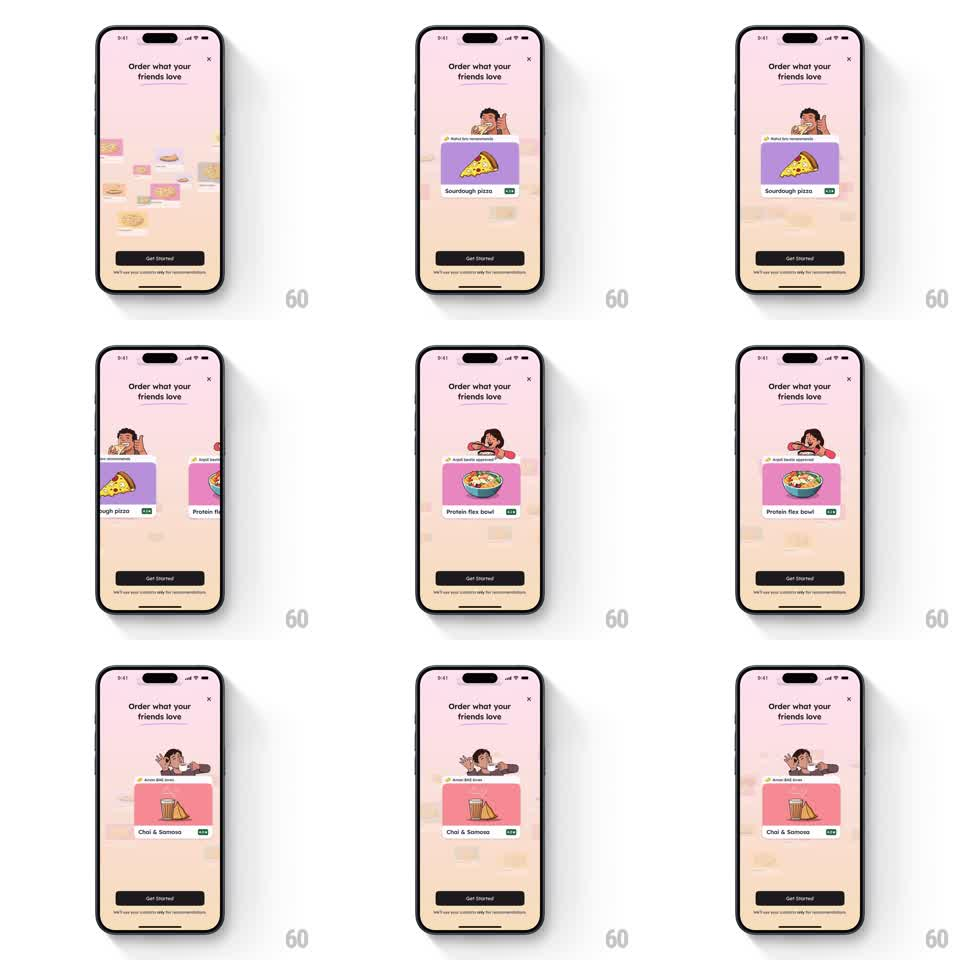

Media
Frame-by-frame

Rebuild this animation 1:1: Zomato's intro carousel - illustrated food cards (Sourdough pizza, Protein flex bowl, Chai & Samosa) swipe through with springy snaps while faint food doodles drift across the pink background.

Rebuild this animation 1:1: Zomato's intro carousel - illustrated food cards (Sourdough pizza, Protein flex bowl, Chai & Samosa) swipe through with springy snaps while faint food doodles drift across the pink background. ## Integration Integration: stack-agnostic spec - springs given as stiffness/damping, timed motions as duration + curve; map every value to your framework and animation library of choice. ## Scene Pink onboarding screen: close X, "Order what your friends love" title, a carousel of food cards (friend's name + dish illustration + dish name + veg mark), faint background doodles, "Get Started" button and fine print at the bottom. ## Motion spec Pattern: auto-advancing card carousel, ~2.5s per card. - The front card slides left and off as the next card slides in from the right (spring ~280/20, one soft overshoot on arrival). - Each card arrives with its dish illustration popping (scale 0.9 -> 1, spring ~400/18) and its name label fading in 100ms later. - Background doodles drift slowly sideways at ~10px/s, independent of the carousel. - Auto-advance pauses on touch; a manual swipe flings with momentum and snaps to the nearest card. - Title, button, and fine print are fixed. ## Calibration - Cards travel edge-to-edge of the visible stage; partial reveals of the next card invite the swipe. - Background drift is barely-there; it must never compete with the cards. ## Reduced motion Cards crossfade; background stays still. ## Don't miss - The friend's name chip sits on top of each card and moves with it - it is part of the card, not the chrome. - The veg mark travels with its dish card.